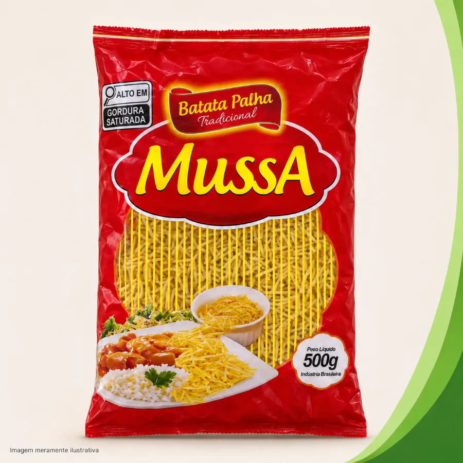

Ovos de galinha
Caixas com 12 cartelas de 30 ovos. São 360 unidades para a produção e a revenda do seu comércio.
Conhecer o produtoBatata palha para lanchonetes, restaurantes, mercados e outros negócios que trabalham com alimentos. Consulte a apresentação e complete seu abastecimento.

A batata palha complementa refeições, lanches e opções de revenda. Você pode consultar o produto no mesmo atendimento dos ovos, sem abrir outro pedido de cotação.
Apresentação, quantidades e disponibilidade são confirmadas no atendimento. As imagens dos produtos são ilustrativas.
Consulte outros produtos no mesmo atendimento e organize seu pedido com a gente.
Caixas com 12 cartelas de 30 ovos. São 360 unidades para a produção e a revenda do seu comércio.
Conhecer o produto
Praticidade para porções, saladas e acompanhamentos. Uma opção para ampliar seu cardápio ou a oferta do seu comércio.
Conhecer o produtoReunimos as principais dúvidas. Para consultar seu pedido, fale diretamente com a gente.
Sim. Nosso atendimento é voltado a estabelecimentos que utilizam alimentos na produção ou na revenda.
Consulte nossa equipe pelo WhatsApp para confirmar a apresentação, as quantidades e as condições de fornecimento.
Atendemos Barra Mansa, Pinheiral, Volta Redonda, Resende e Angra dos Reis. Consulte a programação e a disponibilidade para o seu endereço pelo WhatsApp.
Marque os produtos e informe a quantidade de cada um. Sua mensagem vai pronta para o WhatsApp, e a gente continua a conversa por lá.
Informe sua cidade e o que você precisa. Consulte as condições e a programação de entrega.
Falar com a Mix Alimentos